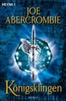
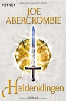
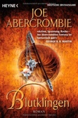
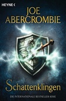
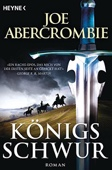
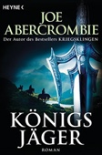
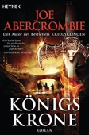

| # |
Autor |
Serie |
Titel |
Format |
Seiten |
Erscheinungsdatum |
Verlag |
Genre |
| 1 |
Joe Abercrombie |
Die Klingen-Saga |
1 - Kriegsklingen |
Broschiert |
796 |
Jan. 2007 |
Heyne Verlag |
Fantasy |

1 - Kriegsklingen Joe Abercrombie
ISBN: 9783453532519
ListPrice: EUR 15,00
Ausgabe: 1st
Maße: 2.20 x 7.95 x 5.35 in
Übersetzer: Kirsten Borchardt
Serie: Die Klingen-Saga
Wertung: 4.5 (51 Stimmen)
Hinzugefügt am: 08.11.2008
Zusammenfassung: Ich kann mich der Meinung meiner Vorgänger nur anschließen, "Kriegsklingen" ist ein sehr sehr gelungenes Buch, bei dem man trotz einer Länge von fast 800 Seiten und 6 unterschiedlichen Erzählperspektiven nie den Überblick verliert, sondern vielmehr vor Spannung beinahe gezwungen wird weiterzulesen. Wie bereits angesprochen wurde, passiert von der Action her im Buch nicht unbedingt sehr viel. Wer also auf ellenlange Schlachtenbeschreibungen wartet, wird hier sicherlich enttäuscht. Das Buch lebt zu 90% von seinen Charakteren (Logan, dem Barbarenkrieger, der das Kämpfen gründlich satt hat, aber trotzdem immer wieder dazu gezwungen wird; dem arroganten, wichtigtuerischen Hauptmann Jezal dan Luthar, der sich als Adliger in eine "Bürgerliche" verliebt oder dem Inquisitor Glokta, bei dessen zynischen Gedankenkommentaren man sich das Lachen einfach nicht verkneifen kann). Genial ist wie Abercrombie seine Charaktere im Verlauf des Buches ausfeilt, sie sich entwickeln lässt. Es gibt kein statisches Gut oder Böse, jeder Charakter trägt von beiden Seiten etwas in sich. So mag es abstoßend sein, wenn beschrieben wird, auf welche brutale Weise sich Neunfinger-Logan seiner Feinde erwähren muss, aber es rührt andererseits, dass er den kranken Malacus Quai, der nach ihm gesucht hat, nicht einfach im Dreck liegen lässt, sondern ihm das Leben rettet. Bei den anderen Figuren ist es genauso, sie haben Tiefgang und Vergangenheit. Es sind keine Superheldenfiguren, die die Siege einfach so aus dem Ärmel schütteln.
Ich bin schon sehr auf die Fortsetzung (Feuerklingen) gespannt. Schön wäre es gewesen, wenn es einleitend zur Geschichte noch eine Karte gegeben hätte, aber ob mit oder ohne, das Buch ist purer Lesegenuß und sein Geld auf jeden Fall wert.
Themen
TB/Belletristik/Fantasy, Belletristik, Fantasy, Science Fiction, Science Fiction/Fantasy, Amerikanische Belletristik
|
| 2 |
Joe Abercrombie |
Die Klingen-Saga |
2 - Feuerklingen |
Broschiert |
795 |
Okt. 2007 |
Heyne Verlag |
Fantasy |
2 - Feuerklingen Joe Abercrombie
ISBN: 9783453532533
ListPrice: EUR 14,00
Ausgabe: 1st
Illustrator: Dominic Harman
Maße: 2.13 x 8.11 x 5.35 in
Übersetzer: Kirsten Borchardt
Serie: Die Klingen-Saga
Wertung: 5.0 (24 Stimmen)
Hinzugefügt am: 08.11.2008
Zusammenfassung: Nach dem Aufsehen erregenden Auftakt "Kriegsklingen" ist mit "Feuerklingen" nun der zweite Band von Joe Abercrombies "First Law"-Trilogie erschienen. Die Handlung setzt unmittelbar nach dem Ende des ersten Bandes ein und wieder gelingt es Abercrombie, den Leser mit den Abenteuern seiner ungewöhnlichen Figuren so sehr gefangen zu nehmen, dass die knapp 800 Seiten des Epos wie im Fluge vergehen.
Im Norden rücken die Truppen König Bethods weiter vor und bedrohen den Frieden der Union. Oberst West erhält den Auftrag, über den Kronprinzen Ladisla und dessen Armee zu wachen, bevor der weltfremde und unerfahrene Prinz sich selbst und seine Männer ins Verderben stürzt. Das wird nicht leicht, denn als Bethods Truppen auf Ladislas Armee zumarschieren, entdeckt dieser plötzlich seinen Heldenmut und will sich ihnen im Kampf stellen.
Im Süden wird Inquisitor Glotka der Oberbefehl über die Stadt Dagoska übertragen. Die gurkhisische Armee steht kurz vor den Toren der Stadt, und Glotka soll sie gegen die Angreifer verteidigen. Zugleich muss er das Schicksal seines Vorgängers Davoust aufklären, der eines Nachts auf mysteriöse Weise verschwunden ist. Einiges spricht dafür, dass er ermordet wurde, doch wer ist der Schuldige? Glotka kommt einer weitreichenden Verschwörung auf die Spur. Währenddessen will der Magi Bayaz, begleitet von seinem Schüler Malacus Quai und einer Handvoll Abenteurer, ein magisches Artefakt bergen, mit dessen Hilfe er seinen Gegner, den Magi Khalul, besiegen könnte.
Wie im ersten Band wird auch in "Feuerklingen" die Handlung vor allem durch die Figuren vorangetrieben. Wir erleben die Geschehnisse aus einer Vielzahl verschiedener Blickwinkel. Das hat den Vorteil, dass die einzelnen Figuren des Romans nicht nur Staffage sind, sondern den Leser durch ihre Widersprüchlichkeit und Lebendigkeit fesseln. Zugleich wird dadurch ein äußerst vielschichtiges Panorama der Fantasy-Welt erschaffen, die dem Roman zugrunde liegt. Während sich der erste Band vor allem auf die Einführung der Figuren konzentrierte, gerät in "Feuerklingen" die Handlung richtig in Fahrt, und man darf auf die Auflösung im dritten Band gespannt sein. -- Eines der beeindruckendsten Fantasy-Debüts dieses Jahres! "-- Gerhard Schildmann"
Themen
Belletristik, Fantasy, Science Fiction, TB/Belletristik/Fantasy, Science Fiction/Fantasy, Englische Belletristik
|
| 3 |
Joe Abercrombie |
Die Klingen-Saga |
3 - Königsklingen |
Broschiert |
941 |
Okt. 2008 |
Heyne Verlag |
Fantasy |
3 - Königsklingen Joe Abercrombie

ISBN: 9783453532526
ListPrice: EUR 15,00
Ausgabe: 1st
Maße: 2.20 x 8.11 x 5.35 in
Übersetzer: Kirsten Borchardt
Serie: Die Klingen-Saga
Wertung: 4.5 (18 Stimmen)
Hinzugefügt am: 08.11.2008
Zusammenfassung: Fantasy mal nicht von der Stange: der junge britische Autor Joe Abercrombie hat mit seinem von der ersten Seite an fesselnden Klingen-Epos "Kriegsklingen" ("The Blade itself"), "Feuerklingen" ("Before they are hanged") und "Königsklingen" ("Last argument of Kings") eine düstere, klassische Fantasy-Welt ohne Elf und Co. auf hohem Niveau geschaffen, die sich bei aller Magie, Schwertkämpfen und bedrohlichen Vorhersehungen hauptsächlich um die Charaktere dreht: gebrochene, realistische Helden, mal gut mal böse, aber immer mit Wucht und Schläue bei der Sache!
Da ist zum einen der Barbarenkrieger Neunfinger-Logan, ein Hau-Drauf-Typ vor dem Herrn, dem die Lust aufs Draufhauen vergangen ist. Trotzdem muss er sich unablässig seiner zahllosen Feinde erwehren und eben draufhauen -- das ergibt absurde Situationen, die actionlastig und tragisch gleichzeitig sind. Großinquisitor Glokta hingegen ist Folterer und Menschenhasser in gelungener Kombination und foltert das Bild einer Verschwörung gegen das Reich aus seinen unzähligen Opfern heraus. Und nicht zu vergessen Captain Jezal dan Luthar, ein selbstsüchtiger Egomane, dem Ruhm und Reichtum wichtiger sind als Freunde und Ehre.
Der Krieg gegen die Nordmänner ist im dritten und letzten Teil von Abercrombies Fantasy-Trilogie in vollem Gange und nur sein bester Freund und größter Feind kann den König der Nordmänner stoppen: Neunfinger-Logan. Glokta hingegen sieht sich nur noch von Feinden umgeben und ganz ohne Schwert, aber mit den scharfen Waffen der Drohungen, Verleumdungen und Folter dringt er weiter ins Herz seiner Feinde vor, während Jezal dan Luthar sich scheinbar für das einfache Leben an der Seite seiner Geliebten entscheidet.
Joe Abercrombies Finale "Königsklingen" ist ein würdiger Abschluss einer herausragend guten Fantasy-Trilogie, bei der die Köpfe gängiger Fantasy-Klischees ebenso häufig rollen wie die Augen des Lesers angesichts der unmöglichen Situationen, in die Abercrombie seine Helden wider willen immer wieder stößt. Vergleichbar mit dem Können von Scott Lynchs "Die Lügen des Locke Lamora" hat sich Abercrombie seinen Platz unter den Fantasy-Autoren der Zukunft schon jetzt gesichert. "--Wolfgang Treß"
Themen
Belletristik, Fantasy, Science Fiction, TB/Belletristik/Fantasy, Science Fiction/Fantasy, Englische Belletristik
|
| 4 |
Joe Abercrombie |
Die Klingen-Saga |
4 - Racheklingen |
Broschiert |
928 |
Okt. 2009 |
Heyne Verlag |
Fantasy |
4 - Racheklingen Joe Abercrombie
ISBN: 9783453525221
ListPrice: EUR 15,00
Maße: 1.65 x 8.50 x 5.98 in
Serie: Die Klingen-Saga
Wertung: 4.0 (2 Stimmen)
Hinzugefügt am: 11.10.2009
Zusammenfassung: Schon bei einer früheren Rezension habe ich geäußert, dass ich als großer Fantasy-Fan diesen Leseherbst ganz besonders drei Epen entgegengefiebert habe, die allesamt Fortsetzungen herausragender Fantasy-Reihen sind.
Zum einen war damit Richard Schwartz neuer Baustein seiner eindrucksvollen und geheimnisvollen Askir-Reihe gemeint Das Geheimnis von Askir 05. Die Feuerinseln, des Weiteren Holger de Grandpairs grandioses Der Krieg der Zauberer Der Krieg der Zauberer, Band 2: Das Orkland als Fortsetzung der Zwei Schwerter-Trilogie, des wohl besten High-Fantasy-Werkes der letzten Jahre Die Zwei Schwerter, Band 1: Der Ansturm der Orks. Das dritte Buch, dessen Erscheinen ich kaum abwarten konnte, war Joe Abercrombies Best Served Cold - zu deutsch: Racheklingen als quasi-Nachfolger des eindrucksvollen Kriegsklingen und seiner Nachfolger.
Während Schwartz und De Grandpair vorgelegt und die Erwartungen der Fantasy-Gemeinde voll und ganz erfüllt haben, stellte sich mir die spannende Frage, ob Abercrombie Anspruch vieler Fans gerecht werden und nach dem Ende von Königslingen Königsklingen. First Law 03. noch einmal zu gleicher Hochform auflaufen könnte.
Zunächst einmal: Racheklingen ist KEINE Fortsetzung der First Law-Trilogie, wie einem der deutsche Verlag gerne glauben machen will. Dennoch spielt das Geschehen innerhalb der gleichen Weltenschöpfung, und manche der Protagonisten erkennt der Kriegsklingen-Leser sogar wieder, wie Herzog Orso von Talins, dessen Tochter dem armen Jezal das Leben zur Hölle machte, oder Nicomo Cosca, den Söldner, der an der Seite von Oberst Glokta focht.
Racheklingen ist als Stand Alone konzipiert, dh als Einzelwerk, eine Fortsetzung ist bisher nicht geplant, wenn auch der Schluss (wie es Abercrombies Art ist) die Interpretationen weiterer Folgewerke zulässt.
Zur Story: Herzog Orso von Talins hat große Ambitionen: Er will ganz Styria unter seine Kontrolle bringen und sich selbst zum König krönen. Tatkräftig wird er dabei von der Söldnerin Monza Murcatto, der Schlange von Talins, unterstützt. Sie und ihr Bruder Benna befehligen die Tausend Klingen, die so manche Schlacht für Orso ausgefochten haben. Monzas große Erfolge haben sie zur umjubelten Heldin gemacht, woraufhin der Herzog kurzerhand beschließt, auf Nummer sicher zu gehen und sie aus dem Weg zu räumen. Sein Mordversuch schlägt jedoch teilweise fehl. Benna kommt ums Leben, Monza jedoch nicht. Verkrüppelt und gezeichnet für den Rest ihres Lebens schwört sie blutige Rache. Sieben Männer stehen auf ihrer Todesliste. Um ihr Ziel zu erreichen, braucht Monza jedoch Unterstützung. Ein Nordmann, der auf der Suche nach einem besseren Leben ist, ein eitler Giftmischer samt Lehrling, ein ehemaliger Häftling mit einer Vorliebe für Zahlenspiele, eine ehemalige Inquisitorin und der berühmt-berüchtigte Nicomo Cosca sollen ihr helfen, den Job zu erledigen.
Was den Schreibstil angeht, so hat sich im Vergleich zu Kriegsklingen und Co wenig verändert. Allenfalls sind die Beschreibungen der Kämpfe und Kriege noch blutrünstiger und kompromissloser ausgefallen, Blut fließt geradezu in Sturzbächen. Auch Ironie, Humor und Zynismus kommen natürlich nicht zur kurz, was ja zu den Stärken des Autors gehört. Genaugenommen lässt sich sogar sagen, dass die Helden von Racheklingen den Protagonisten der First Law-Reihe in vielen Punkten ähnlich sehen, so dominieren auch hier typische, desillusionierte Anti-Helden, die sich in Sarkasmus flüchten. Den Freunden von Logen dem Barbar (Neunfinger-Logen) sei gesagt, dass der Normann Shivers hier eine ähnliche Rolle spielt und sogar eine in manchen Punkten vergleichbare Charakterwandlung durchlebt.
Daneben dominieren Fragen nach Loyalität, Ehre, dem Preis für ein Menschenleben und geben dem Ganzen ein sozusagen moralistisches, philosophisches Moment.
Als negativ fällt für mich nur ins Gewicht, dass sich die Handlungsabläufe allzu oft wiederholen und daher vorhersehbar werden. Die Handlung ist insgesamt sehr stringent und geradlinig und erfüllt nicht ganz die Erwartungshaltung des First Law-Lesers. Gerade das stereotype Blutvergießen lässt einen irgendwann abstumpfen und hätte zu Gunsten intelligenterer Wendungen und Pointen gekürzt werden können.
Fazit: vollauf gelungen, mit viel Action, gelungenen Dialogen und Witz. Insgesamt ein absolut würdiger Nachfolger für Königsklingen, der jetzt schon neugierig auf noch mehr macht!
Themen
Belletristik / Fantasy, Belletristik / Science Fiction / Fantasy, Science Fiction/Fantasy, Englische Belletristik, Fantasy
|
| 5 |
Joe Abercrombie |
Die Klingen-Saga |
5 - Heldenklingen |
Broschiert |
896 |
Aug. 2011 |
Heyne Verlag |
Fantasy |

5 - Heldenklingen Joe Abercrombie

ISBN: 9783453525238
ListPrice: EUR 16,00
Ausgabe: 1.
Maße: 2.44 x 8.11 x 5.35 in
Serie: Die Klingen-Saga
Hinzugefügt am: 15.12.2011
Zusammenfassung:
Themen
|
| 6 |
Joe Abercrombie |
Die Klingen-Saga |
6 - Blutklingen |
Broschiert |
752 |
Apr. 2013 |
Heyne Verlag |
Fantasy |
6 - Blutklingen Joe Abercrombie

ISBN: 9783453314832
ListPrice: EUR 15,99
Maße: 8.11 x 5.20 x 2.20 in
Serie: Die Klingen-Saga
Hinzugefügt am: 12.04.2013
Zusammenfassung:
Themen
|
| 7 |
Joe Abercrombie |
Die Klingen-Saga |
7 - Schattenklingen |
Broschiert |
432 |
Jan. 2017 |
Heyne Verlag |
Fantasy |
7 - Schattenklingen Joe Abercrombie

ISBN: 9783453318069
Maße: 20.6 x 13.7 x 4.2 cm
Serie: Die Klingen-Saga
Hinzugefügt am: 04.04.2017
Zusammenfassung:
Themen
|
| 8 |
Joe Abercrombie |
Die Klingen-Saga |
8 - Zauberklingen |
Broschiert |
768 |
Feb. 2020 |
Heyne Verlag |
Fantasy |

8 - Zauberklingen Joe Abercrombie
ISBN: 9783453315334
Ausgabe: Deutsche Erstausgabe
Serie: Die Klingen-Saga
Hinzugefügt am: 19.03.2020
Zusammenfassung:
Themen
|
| 9 |
Joe Abercrombie |
Die Klingen-Saga |
9 - Friedensklingen |
Broschiert |
848 |
März 2021 |
Heyne Verlag |
Fantasy |
9 - Friedensklingen Joe Abercrombie
ISBN: 9783453315341
ListPrice: 16,99 €
Ausgabe: Deutsche Erstausgab
Maße: 8.15 x 1.89 x 5.39
Serie: Die Klingen-Saga
Hinzugefügt am: 28.04.2021
Zusammenfassung:
Themen
|
| 10 |
Joe Abercrombie |
Die Klingen-Saga |
10 - Silberklingen |
Broschiert |
864 |
Dez. 2021 |
Heyne Verlag |
Fantasy |
10 - Silberklingen Joe Abercrombie
ISBN: 9783453315358
ListPrice: 17,00 €
Ausgabe: Deutsche Erstausgab
Maße: 8.11 x 1.93 x 5.31
Serie: Die Klingen-Saga
Hinzugefügt am: 16.12.2021
Zusammenfassung:
Themen
|
| 11 |
Joe Abercrombie |
Shattered-Sea-Trilogie |
1 - Königsschwur |
Broschiert |
368 |
Jan. 2015 |
Heyne Verlag |
Fantasy |
1 - Königsschwur Joe Abercrombie

ISBN: 9783453315990
ListPrice: EUR 14,99
Maße: 20.6 x 13.6 x 4.1 cm
Serie: Shattered-Sea-Trilogie
Hinzugefügt am: 15.01.2015
Zusammenfassung:
Themen
|
| 12 |
Joe Abercrombie |
Shattered-Sea-Trilogie |
2 - Königsjäger |
Broschiert |
480 |
Aug. 2015 |
Heyne Verlag |
Fantasy |
2 - Königsjäger Joe Abercrombie

ISBN: 9783453316003
ListPrice: EUR 14,99
Maße: 20.6 x 13.6 x 4.5 cm
Serie: Shattered-Sea-Trilogie
Hinzugefügt am: 26.11.2015
Zusammenfassung:
Themen
|
| 13 |
Joe Abercrombie |
Shattered-Sea-Trilogie |
3 - Königskrone |
Broschiert |
480 |
Apr. 2016 |
Heyne Verlag |
Fantasy |
3 - Königskrone Joe Abercrombie

ISBN: 9783453316010
ListPrice: EUR 14,99
Maße: 20.7 x 13.6 x 4.5 cm
Serie: Shattered-Sea-Trilogie
Hinzugefügt am: 10.05.2016
Zusammenfassung:
Themen
|
| 14 |
Peter Atkins |
|
Über das Sein: Ein Naturwissenschaftler erforscht die großen Fragen der Existenz |
Taschenbuch |
135 |
Juli 2013 |
Reclam, Philipp, jun. GmbH, Verlag |
Philosophie |
Über das Sein: Ein Naturwissenschaftler erforscht die großen Fragen der Existenz Peter Atkins
ISBN: 9783150202739
ListPrice: EUR 9,95
Maße: 19.0 x 11.8 x 1.2 cm
Hinzugefügt am: 10.08.2016
Zusammenfassung:
Themen
|


 Updated: 06.06.2022 | Total number of titles: 196 | Page: 1 of 17
Updated: 06.06.2022 | Total number of titles: 196 | Page: 1 of 17